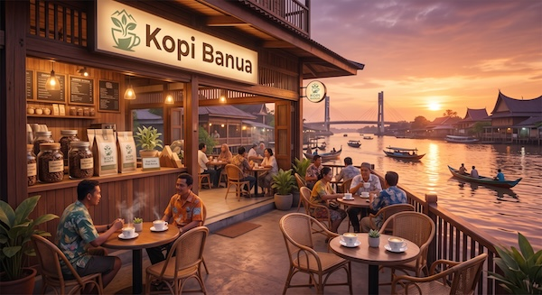
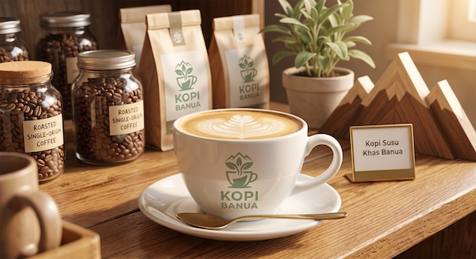

Kedai Kopi Rumahan sejak 2021
Kopi robusta asli Banjarmasin, disangrai setiap pagi.
Dipetik dari lereng Pengaron, disangrai dalam kelompok kecil, dan diseduh hangat di cangkir Anda setiap hari.

Tentang Kami
Bermula dari garasi rumah di Jalan Sultan Adam, Kopi Banua hadir untuk mengenalkan kembali kopi robusta lokal Kalimantan Selatan yang kaya rasa dan dekat di hati.
Biji Lokal
100% robusta dari petani di Pengaron, Banjar.
Sangrai Sendiri
Disangrai manual setiap pagi dengan profil medium-dark.
Harga Bersahabat
Mulai Rp 12.000, semua kalangan bisa menikmati kopi segar.
Jam Buka & Paket Hemat
Jam Operasional Kedai
| Hari | Buka | Tutup |
|---|---|---|
| Senin - Kamis | 08.00 | 22.00 |
| Jumat | 14.00 | 23.00 |
| Sabtu - Minggu | 07.00 | 23.30 |
Paket Pagi
| Paket | Isi | Hemat |
|---|---|---|
| Pagi Banua | Kopi Tubruk + Roti Bakar | Rp 24.000 |
| Manis Santai | Kopi Susu + Pisang Keju | Rp 28.000 |
* Paket hemat berlaku sampai jam 11.00 pagi.
Galeri


Kata Pelanggan
"Kopi Susu Gula Arennya pas banget, gak kemanisan. Rasa kopinya tetap keluar mantap."
— Rian, Mahasiswa Uniska
"Tempatnya tenang buat nugas sore-sore. Roti bakar srikayanya wajib dicoba!"
— Nadia, Freelancer Banjarmasin
"Senang ada kedai yang bangga pakai robusta lokal Pengaron. Sukses terus Kopi Banua!"
— Pak Hendra, Penikmat Kopi
Pesan Sekarang
Pesan langsung dari sini. Pesanan akan tercatat di browser Anda dan diteruskan ke WhatsApp kedai.
Pesanan Saya
Daftar pesanan Anda yang tersimpan di perangkat ini.
| Waktu | Menu | Porsi | Jumlah | Total | Status |
|---|
Hubungi Kami
Surel
Alamat
Jl. Sultan Adam No. 12, Banjarmasin, Kalimantan Selatan